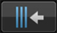

Trabalho de preparação
BPM e grelha de batida
Ajustando correctamente a grelha de batida (e BPM) antecipadamente, os cues, loops e hot cues podem ser definidos para as posições das batidas. (Função de quantificação)
 Para obter detalhes sobre as funções de reprodução utilizando a grelha de batida e as BPMs (sincronização, mistura, etc.), consulte as respectivas instruções de funcionamento da unidade de DJ.
Para obter detalhes sobre as funções de reprodução utilizando a grelha de batida e as BPMs (sincronização, mistura, etc.), consulte as respectivas instruções de funcionamento da unidade de DJ.
1Quando toca em [Prepare] no menu superior, o painel do browser abre-se.
- As grelhas de batida não podem ser ajustadas quando associadas a leitores de DJ. Para o fazer, regresse ao menu superior, cancele temporariamente a ligação e, em seguida, abra o painel do browser.
2Toque na faixa cuja grelha de batida pretende ajustar.
O painel do leitor é exibido e a faixa é reproduzida.
3Toque em  no canto inferior direito da exibição da forma de onda para abrir as opções de ajuste da grelha de batida.
no canto inferior direito da exibição da forma de onda para abrir as opções de ajuste da grelha de batida.
A exibição da posição da batida muda de pontos para uma linha vertical.
4Toque em [ ] no painel do leitor para colocar em pausa a reprodução.
] no painel do leitor para colocar em pausa a reprodução.
5Arraste a exibição aumentada da forma de onda para a esquerda e para a direita para ajustar de modo a que a batida esteja posicionada sobre a linha branca vertical no centro.
- A exibição aumentada da forma de onda pode ser ampliada ou reduzida juntando ou separando os dedos. A posição de pausa pode ser movida em unidades de milissegundos ampliando e, em seguida, arrastando.
6Quando toca em , toda a grelha de batida desliza com a linha vertical branca no centro relativamente à posição da batida.
Caso apenas pretenda deslizar a secção da grelha de batida para além da linha vertical branca no centro, toque em em vez de  .
.
7Toque em  no canto inferior direito da exibição da forma de onda para fechas as opções de ajuste da grelha de batida.
no canto inferior direito da exibição da forma de onda para fechas as opções de ajuste da grelha de batida.
 Nota
Nota
Para cancelar todas as posições de batida ajustadas e as BPM e repô-las conforme se encontravam previamente, reanalise o ficheiro de música.

Opções de ajuste da grelha de batida
Para obter informações sobre outras opções de ajuste da grelha de batida, consulte a tabela abaixo.
Ícone | Descrição |
Toda a grelha de batida desliza tendo como referência a posição na qual a faixa está actualmente em pausa (a linha vertical branca no centro). | |
Estas movem a grelha de batida para a esquerda ou direita em unidades de 1 mseg.
| |
 | Isto diminui a espaçamento da grelha de batida em 1 mseg. |
Isto aumenta a espaçamento da grelha de batida em 1 mseg. | |
O valor de BPMs é multiplicado por 2 (diminuindo o espaçamento da grelha de batida por 1/2). | |
O valor de BPMs é dividido por 1/2 (duplicando o espaçamento da grelha de batida). | |
O ponto inicial para ajustar a grelha de batida é definido temporariamente para a posição na qual a faixa está actualmente em pausa (a linha vertical branca no centro) e apenas a secção da grelha de batida para além do ponto inicial desliza tendo como referência o ponto inicial. Até o ponto inicial ser cancelado, apenas as posições de batida para além do ponto inicial são exibidas como linhas verticais e as operações de ajuste da grelha de batida apenas afectam a secção da grelha de batida para além do ponto inicial. | |
Isto cancela o ponto inicial definido temporariamente para ajustar a grelha de batida. As posições de todas as batidas são exibidas novamente sob a forma de linhas verticais e as operações de ajuste da grelha de batida afectam novamente toda a grelha de batida. | |
Isto anula a operação efectuada previamente. É possível anular até as 10 operações anteriores. | |
Isto liga e desliga a reprodução do som do metrónomo durante a reprodução e alterna o seu volume (alto, médio e baixo). Ao premir continuamente, é possível seleccionar o tom. | |
Utilize para introduzir o valor de BPMs e editá-lo. O espaçamento de grelha de batida muda de acordo com o valor de BPMs introduzido. | |
A posição da batida mais próxima da linha vertical branca no centro da exibição aumentada da forma de onda é indicada com uma linha vermelha como a primeira batida na medida. As linhas vermelhas que indicam a primeira batida na medida são exibidas na grelha de batida a cada quatro batidas, desde o início até ao fim da faixa. |